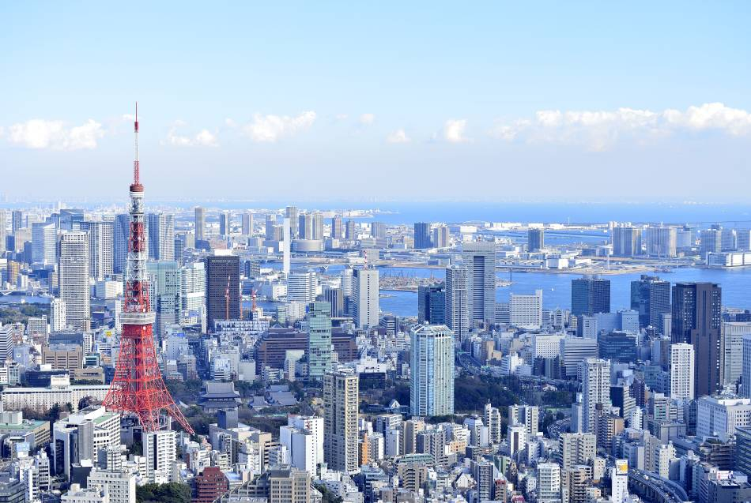

Tokyo« Capitale de l'est », anciennement Edo (江戸?), officiellement la préfecture métropolitaine de Tokyo, est de facto la capitale actuelle du Japon. Elle est la plus peuplée des préfectures du Japon, avec plus de 13 831 421 habitants intra-muros en 2018 et 42 794 714 dans l'agglomération4, et forme l'aire urbaine la plus peuplée au monde. Située sur la côte est de l'île principale de l'archipel japonais, Honshū, Tokyo est l'une des quarante-sept préfectures du Japon.
La tour de Tokyo (東京タワー, Tōkyō tawā?, de l'anglais Tokyo Tower) est une tour rouge et blanche située dans l'arrondissement de Minato à Tokyo au Japon. Son concept est fondé sur celui de la tour Eiffel de Paris. Elle a été réalisée par l'architecte Tachū Naitō. La tour mesure 332,6 mètres de haut (soit 7,6 mètres de plus que la tour Eiffel, qui en mesure 325 en comprenant son antenne) ce qui en fait l'une des plus hautes tours en métal du monde. L'édifice ne pèse que 4 000 tonnes, ce qui est bien moins que les 10 100 tonnes de la tour Eiffel. La construction démarre en 1957 et s'achève en 1958. La tour ouvre au public le 23 décembre de la même année. 176 ampoules réparties à différents endroits éclairent la tour. L'hiver, elle est illuminée en orange et l'été en blanc. L'antenne dominant la tour s'est tordue lors du séisme du 11 mars 2011.



Le Sensō-ji est un temple bouddhiste situé à Tokyo, dans le quartier d'Asakusa (arrondissement de Taitō). C'est le plus vieux temple de la capitale japonaise ; il est dédié à la déesse bodhisattva Kannon.

Cliquez pour admirer la ville